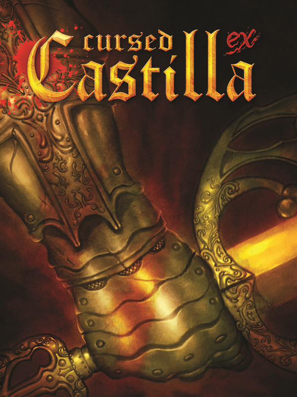

Cursed Castilla
Cursed Castilla
Details
|  | |
| Playtime | 4h 9m 0s |
| Last Activity | 03/07/2018 11:46:03 |
| Added | 27/01/2018 |
| Modified | Never |
| Completion Status | Not Played |
| Source | Steam |
| Platform | PC |
| Release Date | 20/10/2016 |
| Community Score | 80 |
| Critic Score | 79 |
| User Score | |
| Genre | Action Adventure Indie |
| Developer | Gryzor87 Locomalito |
| Publisher | Abylight Studios |
| Feature | Achievements Captions Available Cloud saves Full Controller Support Single Player Stats Trading Cards |
| Links | PCGamingWiki Community Hub Discussions Guides Achievements Store Page News |
Description
A young witch's sorrow has been corrupted by a malicious demon who uses her tears to open a gateway to hell. Now, the kingdom is threatened as evil floods the countryside. Enter the world of the Cursed Castilla, embroiled in the mysteries of European folklore. You take on the role of Don Ramiro, a knight appointed by King Alphonse VI, and charged with the perilous mission to: travel the cursed lands of Tolomera, banish the creatures that plague them and close the gateway.
Set in the Spanish kingdom of Castilla during the Middle Ages, you will be invited to take part in a love letter to Spanish folklore and the best of retro platformers. Here Don Ramiro will face not only legends from the chivalrious romances of Amadis de Gaula but also powerful European mythos brought to life. But even if you survive these challenges, you may end up losing the souls of your companions and even your own if you are not careful!
But all is not lost! Fate has given you a range of weapons to bring the battle to the heart of the demon. There are secrets to be found and power-ups to be had!
Prepare yourself for a journey into the Cursed Castilla Ex, the extended version of the acclaimed arcade classic Maldita Castilla, created originally by the Spanish developer Locomalito - in collaboration with Abylight Studios.
Features:
Set in the Spanish kingdom of Castilla during the Middle Ages, you will be invited to take part in a love letter to Spanish folklore and the best of retro platformers. Here Don Ramiro will face not only legends from the chivalrious romances of Amadis de Gaula but also powerful European mythos brought to life. But even if you survive these challenges, you may end up losing the souls of your companions and even your own if you are not careful!
But all is not lost! Fate has given you a range of weapons to bring the battle to the heart of the demon. There are secrets to be found and power-ups to be had!
Prepare yourself for a journey into the Cursed Castilla Ex, the extended version of the acclaimed arcade classic Maldita Castilla, created originally by the Spanish developer Locomalito - in collaboration with Abylight Studios.
Features:
- Explore Tolomera del Rey in depth through to 8 game stages
- Fight against 48+ types of enemies and 19 final bosses
- Banish the evil invading the Kingdom with 4 different endings
- Become a seasoned monster hunter with the illustrated bestiary with unlockable information about the legends featured in the game
- Brag about your combat skills with 15 unlockable achievements
- Yell your battle cry with songs for the original soundtrack and the remastered audio
- Revive the glory of the arcade times with 10 different screen view modes